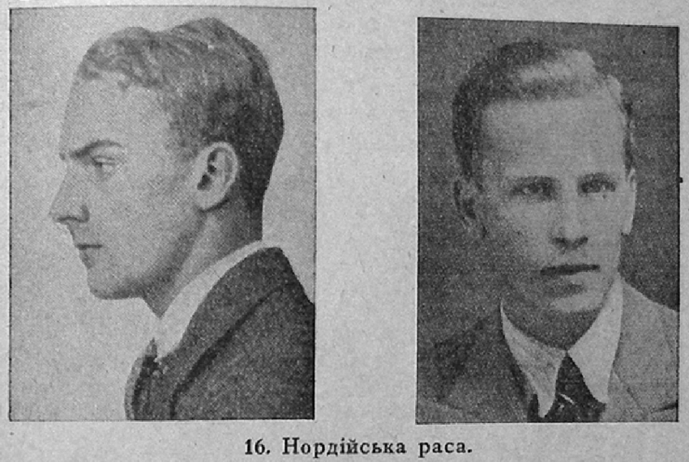
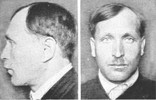
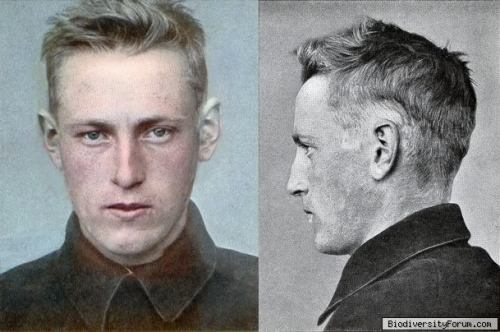
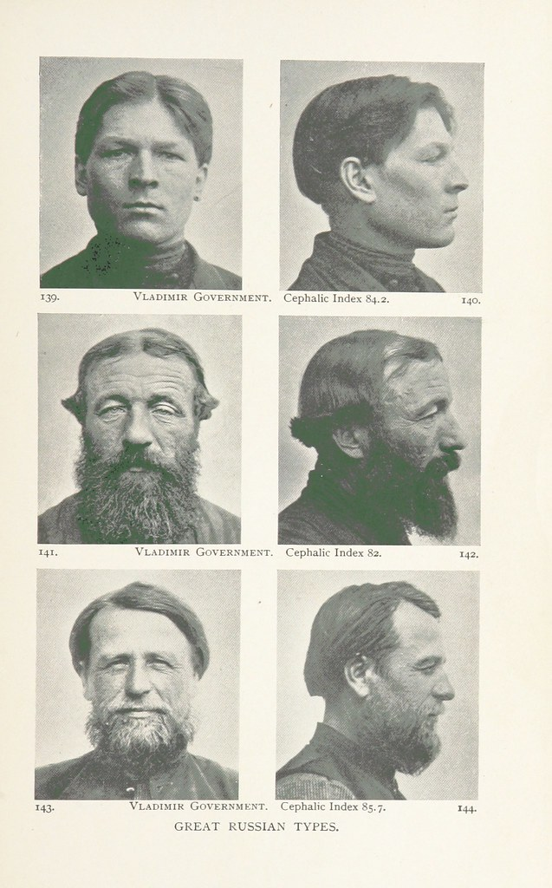
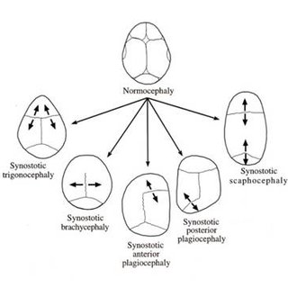
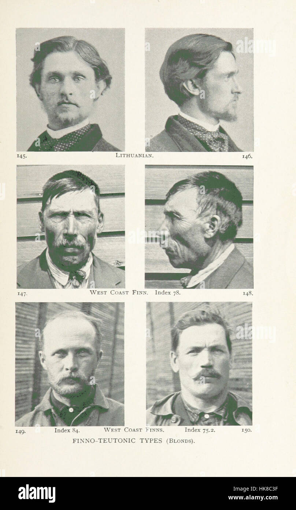

The east nordid type ornates the moscovites,some parts of northwestern russia and central germanic europe. An illustration such as here:

i like to call this man an "adonis" he has a straight nasal profile in aerodynamical vue,blond hair, light eyes with a docycephalic rooted chin. From old norsic vanquired heterezyguos tribes had enormous germanic variations in UkranianKievan,NorthenRussian people.Leptocrospic prelavent face is very common in this race.

A chuvash from chuvashia (Eastern russia). His ancestors are volga bolgars (nomadic turkish group) mixed with the peripatetic finno ugrians creates a"nordicist" point of morphology.
Hallstat Nordid & Baltoid variations
the hallstat nordics are heavily nordicized when it comes to their physiognomy criteria. Their taxonomical ancestry has positive collerations with borebby germans & Tronder in cranvial vault as closests matches. It is heavily propagated in southern norway,Northern germanic areas all the way to to anatolian greece and even northern africa

This man appears to have a hyperlyppheronic feature short nasal height (long nasal depression) in length mm. He has light eyes, large foreheard (common for also borebby germans) and espicially a common docicephalic feature for nordics his type from corded wave era in predominace.
East baltic variations
The east baltic type is very prelavent in teutonic areas such as prussia,lithunia,latvia,estonia,western russian all the way to balkanic/atlaic europe in some cases.

Russians from vladimir GOV. near nizhny novogord, as we contemplate we notice extented bracycephaly (82.9 cephalic index in picture 1a.1b light brown hair and light eyes)such as the example here:

West baltid variations
the west baltid type assimiliates the northern germanic profile & west prussian profile near lithunia

2a,2b we can see a west finn that assimialites a estonian/lappoid overcrossing profile giving him a look of a pure german of teutonic order. Despite having a normocephaly , he still maintains a look that of a prussian compatriot. The 3a,person shown in the photo has also a teutonic aryan look, has probably some corded wave mixage from the baltic lineage,neolithically speaking. Moreover, there some german/swedish mixage in the west of finnish islands so it is no surprise to say the least.
Sources
id recommend sources derived from Carletoon S.Coon photographic supplements and Dr appleton studied sociological races since they have more connotations that impregnates the meaning of nordic races such as defined here(carries more sources than i do implicitly).Humanphenotypes.hlmt is also a good source for visiting and understanding the finite term of anthropology.